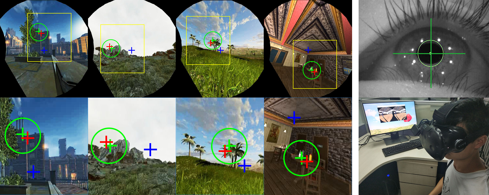

SGaze: A Data-Driven Eye-Head Coordination Model for Realtime Gaze Prediction
Zhiming Hu, Congyi Zhang, Sheng Li, Guoping Wang, Dinesh Manocha
IEEE Transactions on Visualization and Computer Graphics (TVCG, IEEE VR 2019 Journal-track), 2019, 25(5): 2002-2010.

Abstract
We present a novel, data-driven eye-head coordination model that can be used for realtime gaze prediction for immersive HMD-based applications without any external hardware or eye tracker. Our model (SGaze) is computed by generating a large dataset that corresponds to different users navigating in virtual worlds with different lighting conditions. We perform statistical analysis on the recorded data and observe a linear correlation between gaze positions and head rotation angular velocities. We also find that there exists a latency between eye movements and head movements. SGaze can work as a software-based realtime gaze predictor and we formulate a time related function between head movement and eye movement and use that for realtime gaze position prediction. We demonstrate the benefits of SGaze for gaze-contingent rendering and evaluate the results with a user study.Demo Video
Links
Doi: doi
Paper: paper.pdf
Dataset: dataset Code: codeSupplementary materials: supplementary materials
BibTeX
@article{hu19sgaze,
title = {SGaze: A Data-Driven Eye-Head Coordination Model for Realtime Gaze Prediction},
author = {Hu, Zhiming and Zhang, Congyi and Li, Sheng and Wang, Guoping and Manocha, Dinesh},
journal = {IEEE Transactions on Visualization and Computer Graphics},
volume = {25},
number = {5},
pages = {2002--2010},
year = {2019},
doi = {10.1109/TVCG.2019.2899187}}